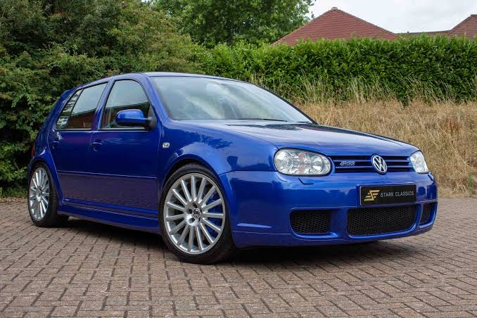
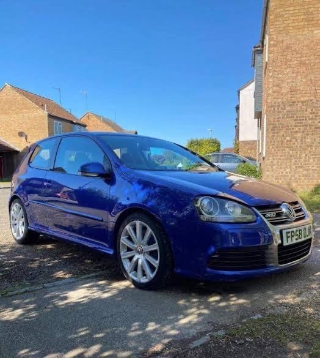
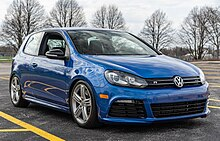
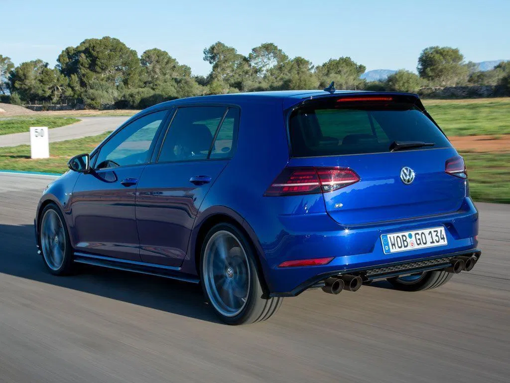

Volkswagen R
Aritcle
Contents
Models
- Golf R32 Mk4
- Golf R32 MK5
- Golf R MK6
- Golf R Mk7
Volkswagen R is the brand used by the German auto manufacturer
Volkswagen to indicate a sport or high performance model. An "R" badge is
placed on the grille, front fenders and trunk of R-model vehicles to indicate
the vehicle's trim level.
The R-marque is used on certain performance models alongside "GT"
model designations, such as the GTI, GLI, GTE and GTD. These vehicles
are also sold as "sport models" but are less performance-oriented when
compared to vehicles such as the Golf R.
The 2022 Volkswagen Volkswagen_Touareg R-Line was renamed to R-Style. [1]
Models
editGolf R32 (Mk4)
Main article: Volkswagen Golf Mk4 R32
Volkswagen began production of the Mk4 R32 in 2002, for the 2003 model year. It
was the world's first production car with a dual-clutch gearbox DSG — available for
the German market. [2] Due to unexpected popularity, Volkswagen decided to sell the
car in the United States and Australia as the 2004 model year Volkswagen R32. Billed
and luxury feature Volkswagen had to offer, including the all new 3,189 cc (3.2 L;
194.6 cu in) DOHC 4 valves per cylinder VR6 engine (ID codes: BFH/BML), which
produced a rated motive power output of 241 PS (238 bhp; 177 kW) at 6,250 rpm and

320 N⋅m (236 lb⋅ft) at 2,800 rpm of torque. [3] Further additions included Haldex Traction
-based 4motion on-demand four-wheel drive system, a new six-speed manual transmission, independent rear suspension
, Climatronic automatic climate control, sport seats from König with R32 badging, 18" OZ Aristo alloy wheels
(Ronal produced the wheels towards the end of production), Electronic Stability Programme, larger 334 mm (13.1 in) disc brakes
with gloss blue painted calipers, sunroof (for the US), Xenon Headlamps (for Europa), and model-specific
bodywork additions.
Golf R32 (Mk5)
Main article: Volkswagen Golf Mk5 R32
In September 2005, the Mk5 R32 went on sale in Europe. United Kingdom sales
began in November that year. [4] It features an updated 3.2-litre VR6 engine of that
fitted to the previous Mk4 version, with an extra 10 PS (7 kW; 10 bhp ) due to a
eworked inlet manifold. Maximum power is now 250 PS (184 kW; 247 bhp) at
6,300 rpm; torque is unchanged at 320 N⋅m (236 lbf⋅ft). It reaches an electronically
governed top speed of 250 km/h (155.3 mph). Going from 0 to 100 km/h (62 mph) will
take 6.5 s, reduced to 6.2 s with the Direct-Shift Gearbox.
Compared with the previous Mk4 R32, it is 0.1 seconds faster for the manual version,

while the newer R32 is about 40 kg (88.2 lb) heavier. As with the previous R32; there
is the Haldex Traction -based 4motion part-time four-wheel drive, now through 18" Zolder 20-spoke alloy wheels.
Stopping the R32 comes in the form of blue-painted brake calipers with 345 mm (13.58 in) discs at the front and 310 mm (12.20 in) disks at the rear.
The Mk5 R32 was released in the US in August 2007 with a limited production run of 5000. Each R32 has its production number laser etched on its steering wheel.
In Chile, the Golf Mk5 was only offered in this model. Only the Brazilian-made Mk4 was sold.
Golf R (Mk6)
The MK6 Golf R was sold from 2012-2013, and was the first 'R' model to feature a
turbocharged 2.0L FSI engine and direct injection. The EA113 TFSI engine was brought
forward from the previous generation MK5 Jetta/GTI/Passat, with some technical changes.
The EA113 'R' variant produced 257 PS (189 kW; 253 bhp) and
330 N.m (243 Ibf.ft ) with the addition of a K04 turbocharger/exhaust manifold module
from BorgWarner, larger direct injectors, optimized camshafts, and a larger charge air cooler.

The MK6 Golf R was offered with both a 6-speed manual transmission as well as a 6-
speed Direct Shift Gearbox, although only the manual version was offered in North
America. 0 to 100 km/h (62 mph) time was 5.8 seconds, 0.7 seconds faster than the
curb weight is only 7lbs lighter than the previous generation.
A fourth-generation Haldex unit was ubrsed in the MK6R, allowing a nearly endless torque
split between front and rear axles.
Golf R (Mk7)
Main article: Volkswagen Golf R
Like the GTI, the Golf R is also built as a three- or five-door hatchback. It is powered
by a newly developed version of the 1,984 cc (2.0 L; 121.1 cu in) turbocharged EA888
petrol FSI inline-four engine used in the latest Golf GTI (and Audi S3), but in this
application producing 300 PS (296 bhp; 221 kW) (206 kW (280 PS; 276 bhp) for "hot
climate" markets such as Australia, Japan, USA) from 5,500 to 6,200 rpm and
380 N⋅m (280 lb⋅ft) from 1,800 to 5,500 rpm of torque. [5] Compared to the GTI's
powerplant, the Golf R's engine has a modified cylinder head, exhaust valves, valve

seats and springs, pistons, injection valves and larger intercooler and turbocharger. DSG equipped models also come
with an auxiliary oil cooler on the passenger side.
References
- "2002 Volkswagen Golf R32 Golf 4". carfolio.com. Retrieved June 18, 2018.
- "Volkswagen Golf R32 (2005 - 2008) 3.2 v6 R32 4MOTION 3d: Specs & Dimensions". Parkers Guide (UK). Retrieved 14 September 2019.
- George Kacher,ed.(4 February 2014). "VW Golf R 2014 review". carmagazine.co.uk. Retrieved 29 June 2018.